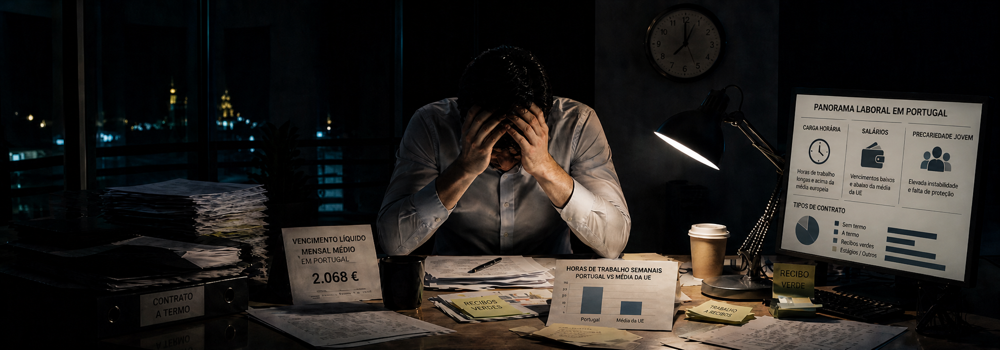

Portugal é o quinto país da União Europeia onde se trabalha mais horas por semana. A média nacional fixa-se em 39,7 horas, contra 37 horas na média europeia. À primeira vista, três horas semanais. Em termos anuais, são quase 140 horas a mais. O equivalente a três semanas e meia adicionais de trabalho por trabalhador, todos os anos, comparado com a média da UE.
Ao mesmo tempo, o salário médio em Portugal é de 2.068 euros mensais. A média europeia é de 3.317 euros. A diferença, em valor absoluto, é de 1.249 euros por mês. Em proporção, o trabalhador português recebe cerca de 62% do que recebe um trabalhador médio na UE. Para dois terços do dinheiro, oferece dez por cento mais tempo.
A estes dois indicadores soma-se um terceiro: a precariedade. Portugal mantém uma das taxas mais elevadas de contratos a termo da União, com particular incidência nos jovens. Entre os trabalhadores com menos de 30 anos, mais de metade não tem contrato sem termo, segundo dados do Eurostat e do INE consolidados ao longo dos últimos trimestres.
São três factos que circulam separadamente no debate público, mas que só fazem sentido em conjunto. É na sobreposição que está a leitura.
Os números, em escala europeia
O dado de 39,7 horas refere-se à carga horária semanal habitual de um trabalhador a tempo completo. Acima de Portugal aparecem apenas Grécia, Bulgária, Polónia e Roménia. Abaixo, a maioria dos países da Europa ocidental. A Alemanha situa-se nas 35,3 horas. A França nas 36,2. Os Países Baixos, com forte incidência de tempo parcial, nas 33,2. A Dinamarca nas 33,7.
O contraste mais útil é com economias de produtividade comparável ao discurso oficial português, o que costuma incluir Espanha e Itália. Espanha trabalha em média 36,4 horas e paga 2.539 euros. Itália, 36,2 horas e 2.715 euros. Portugal trabalha mais do que ambos e paga menos do que ambos. Não é uma anomalia estatística marginal: é uma posição estrutural distinta dentro do sul da Europa.
A relação entre as duas variáveis pode ser traduzida num indicador simples: o salário por hora trabalhada. Portugal fica em torno dos 12 euros brutos por hora, contra 21,4 euros na média europeia. Uma hora de trabalho em Portugal vale, em valor monetário direto, pouco mais de metade de uma hora de trabalho na UE.
| País | Horas semanais | Salário médio | Valor por hora bruto |
|---|---|---|---|
| Portugal | 39,7 | 2.068 € | ~12,0 € |
| Espanha | 36,4 | 2.539 € | ~16,1 € |
| Itália | 36,2 | 2.715 € | ~17,3 € |
| França | 36,2 | 3.180 € | ~20,3 € |
| Alemanha | 35,3 | 4.105 € | ~26,8 € |
| Média UE | 37,0 | 3.317 € | ~21,4 € |
O diferencial não é explicável por inflação acumulada, custos comparáveis de habitação ou por escolhas individuais sobre quanto trabalhar. O preço da habitação em Lisboa e no Porto convergiu, em muitas zonas, com cidades como Madrid, Barcelona ou Milão. O salário não convergiu.
O nó da produtividade
A explicação mais comum para o fosso é a produtividade. E, neste ponto, a leitura técnica é correta. Portugal produz, por hora trabalhada, cerca de 27 euros de valor acrescentado bruto. A média europeia situa-se acima dos 47 euros. A Alemanha ultrapassa os 60. Cada hora portuguesa gera, em média, pouco mais de metade do valor de uma hora europeia média.
Este indicador é frequentemente mobilizado para encerrar a discussão. O argumento corre assim: se a produtividade é baixa, os salários só podem ser baixos, e mais horas de trabalho são a forma natural de compensar a diferença. É uma equação fechada, internamente coerente, e que tem uma virtude política: tira responsabilidade a quase todos os intervenientes.
O problema é que a produtividade não é uma propriedade intrínseca dos trabalhadores. Resulta da combinação entre capital instalado, tecnologia disponível, organização do trabalho, dimensão das empresas e qualidade da gestão. Trabalhadores portugueses emigrados em economias da Europa central tendem a aproximar-se rapidamente da produtividade dos colegas locais, em alguns casos ultrapassando-a. A diferença não viaja com o passaporte. Está nos processos, nas máquinas e na decisão.
O tecido empresarial português tem caraterísticas que pesam neste cálculo. Mais de 99% das empresas são PME. A dimensão média é baixa, com sobrerrepresentação de microempresas. A intensidade de capital por trabalhador é uma das mais reduzidas da UE. Em média, um trabalhador português opera com menos máquinas, menos software e menos infraestrutura do que um trabalhador alemão. Trabalhar mais horas é, em parte, uma consequência mecânica deste défice de capital.
A precariedade como variável de ajuste
O terceiro vértice do triângulo é o que mais tem sido invisibilizado nas leituras dominantes. Portugal mantém, há mais de duas décadas, uma das taxas mais altas de contratos a termo da União Europeia. Em 2025, perto de 17% dos trabalhadores portugueses tinha contrato com termo certo ou incerto, contra uma média europeia abaixo dos 12%.
Entre jovens, o cenário é outro. Mais de metade dos trabalhadores entre os 18 e os 29 anos está em contratos temporários, recibos verdes regulares ou estágios encadeados. Para uma parte significativa da geração que está agora a entrar no mercado, o contrato sem termo é uma exceção, não uma regra. A passagem para emprego estável é tardia, frequentemente já depois dos 30 anos, e em vários setores não chega a acontecer.
A precariedade não é um problema isolado. Funciona como uma variável de ajuste que permite às empresas responder a oscilações de procura sem alterar o quadro fixo, e ao mesmo tempo manter os salários sob pressão descendente. Em mercados onde o trabalho estável é abundante, a margem para subir salários é maior. Em mercados onde uma parte significativa dos trabalhadores está em rotação contratual permanente, o preço do trabalho não sobe pela negociação, sobe apenas pela escassez.
Nas empresas, este equilíbrio tem custos que raramente entram nas contas formais. A rotatividade alta consome tempo de gestão, encarece o recrutamento, dilui investimento em formação e degrada o conhecimento acumulado. Trabalhadores com horizonte curto na empresa investem menos em melhorar processos. Trabalhadores em recibo verde encadeado raramente desenvolvem o tipo de relação com o negócio que gera ideias de eficiência. A precariedade poupa salário no curto prazo e drena produtividade no médio.
O que isto faz ao mercado de trabalho real
A combinação destes três fatores produz um mercado de trabalho com características próprias. As empresas portuguesas competem, muitas vezes, na base do preço, e o trabalho é uma das principais variáveis que conseguem comprimir. Quando uma indústria de calçado, uma confeção ou um serviço partilhado em Lisboa concorre com fornecedores europeus, o que faz pender a balança não é a tecnologia ou a marca: é o custo unitário do trabalho.
Esta lógica funciona enquanto a vantagem de preço se mantém. O problema é que está a erodir-se. Os países da Europa central e oriental, que durante anos foram o concorrente direto de Portugal em manufatura, subiram salários a um ritmo que ultrapassa o português há mais de uma década. A Polónia paga hoje, em vários setores industriais, mais do que Portugal. A República Checa também. A Roménia aproxima-se rapidamente. A vantagem comparativa que Portugal exibia há vinte anos, no quadrante baixo do mercado europeu, esvaiu-se em silêncio.
Em paralelo, o país perdeu mão de obra qualificada para a emigração. Médicos, engenheiros, programadores e gestores intermédios saíram em volumes que nenhum sistema de emigração no século XX português comportaria. A reposição faz-se por trabalhadores estrangeiros, sobretudo de África, da Ásia do Sul e do Brasil, em parte concentrados em setores onde a precariedade é mais funda. A composição mudou. Os indicadores não.
O efeito sobre quem decide investir
Para uma empresa que avalia onde instalar uma operação na Europa, Portugal continua a oferecer um custo de trabalho competitivo. Mas a decisão raramente se esgota no custo bruto. Avalia-se o custo ajustado à produtividade, a estabilidade da força de trabalho, a qualidade do quadro intermédio, a rotatividade esperada, a disponibilidade de talento técnico em escala e o ritmo de progressão salarial nos cinco a sete anos seguintes.
Nesta grelha mais completa, o posicionamento português é mais frágil do que o discurso institucional sugere. O custo unitário do trabalho continua atrativo, mas o custo total ajustado à rotatividade e à formação contínua não é necessariamente o mais baixo. A escassez de quadros intermédios bem formados, com inglês fluente e capacidade de gestão, tornou-se o constrangimento principal em várias decisões de investimento. Não é o preço do trabalhador de base. É a falta do gestor de operação que falte recrutar.
Quando uma empresa multinacional decide entre Lisboa, Madrid e Varsóvia, o salário do operador pode ser favorável a Lisboa. O custo total do projeto, integrando recrutamento de quadros, retenção e formação, deixou de ser. E é por aqui que se perde investimento sem dar por isso.
O que muda nos próximos anos
Há três forças que vão pressionar este equilíbrio durante a década atual. A primeira é demográfica. A população ativa portuguesa contrai-se de forma sustentada. Ao ritmo atual, com saldo migratório positivo mas insuficiente, em 2035 haverá menos cerca de 400 mil trabalhadores potenciais do que em 2024. A escassez vai forçar subidas salariais nos setores que quiserem manter dimensão.
A segunda é regulatória. A diretiva europeia dos salários mínimos adequados, a transposição da diretiva da transparência salarial e a revisão da diretiva dos trabalhadores temporários alteram o quadro de funcionamento do mercado. As empresas vão ter de justificar diferenças salariais, divulgar bandas de remuneração nos anúncios de emprego e suportar mais auditoria sobre a utilização de contratos a termo.
A terceira é a transformação tecnológica. A automação e a aplicação de inteligência artificial em processos administrativos, atendimento, análise de dados e funções de back-office reduzem a procura por trabalho intensivo em horas. Os ganhos de produtividade que esta transformação promete só se materializam se as empresas reorganizarem o trabalho. Adicionar tecnologia sem mexer no processo é caro e ineficaz.
Falsas saídas e respostas reais
Existem várias respostas frequentes para este diagnóstico que não resolvem nada. A primeira é apelar a que os portugueses trabalhem menos horas, como se esta fosse uma escolha individual. Não é. A maioria dos trabalhadores cumpre o horário contratual. A segunda é exigir, por decreto, salários iguais aos europeus. Sem alterar a produtividade, isto destrói emprego em massa nos setores menos capitalizados. A terceira é remeter tudo para a fiscalidade, esquecendo que a carga fiscal portuguesa, embora elevada, não explica a totalidade do diferencial salarial.
As respostas reais passam por três frentes que dependem das empresas, e não apenas do Estado. Primeiro, capitalizar a operação. Mais máquinas, mais software, mais automação por trabalhador, com financiamento público disponível para isso através do Portugal 2030 e do PRR. Segundo, reorganizar o trabalho. Substituir horas longas em tarefas de baixo valor por horas curtas em tarefas de alto valor, libertando capacidade analítica. Terceiro, estabilizar o quadro fixo nos níveis intermédios. Empresas que retêm gestores de operação, técnicos qualificados e quadros administrativos durante cinco a dez anos têm produtividade superior, custo de recrutamento menor e capacidade de subir preços.
Nenhuma destas frentes é nova. A diferença é que se tornaram condição de sobrevivência, não opções de melhoria. As empresas que mantiverem o modelo de trabalho intensivo em horas e baixo investimento em capital vão ser apertadas em três sentidos: pelos salários a subir por escassez, pela regulação a apertar a precariedade e pela concorrência tecnológica a comprimir margens.
O que isto significa para a sua empresa
Para um gestor que olha estes números, a tentação é tratá-los como debate macro. São, mas só em parte. A leitura útil é micro, ao nível da estrutura de custos e da estratégia de capital humano da empresa que dirige. As três decisões que importam tomar nos próximos doze meses têm pouco a ver com a média nacional e muito a ver com o posicionamento competitivo de cada operação.
A primeira decisão é sobre intensidade de capital. Se a sua empresa opera com rácio de capital por trabalhador abaixo da média setorial europeia, o caminho racional é investir em equipamento, software e infraestrutura digital. O Portugal 2030 e o PRR mantêm linhas abertas para este tipo de investimento, com taxas de apoio entre 25% e 60% conforme a região, a dimensão e a tipologia. O custo de não investir é cumulativo: cada ano sem mexer no rácio de capital agrava a desvantagem face a quem está a mexer.
A segunda decisão é sobre a composição do quadro fixo. Em empresas com rotatividade superior a 20% ao ano nos quadros intermédios, o ganho marginal de estabilizar metade desse quadro tem retorno superior a quase qualquer outro investimento operacional. Significa repensar bandas salariais, plano de progressão e contratos. Custa mais no curto prazo e poupa mais no médio. Para empresas em fase de crescimento ou candidatas a internacionalização, esta passa a ser uma decisão estrutural, não uma decisão de Recursos Humanos.
A terceira decisão é sobre como medir a operação. Empresas que continuam a medir produtividade por presença em horário, em vez de por valor gerado por hora, estão a olhar para o indicador errado. A redução de horas com manutenção de output é um sinal de eficiência, não de quebra. As empresas que conseguirem fazer esta transição, com tecnologia adequada e processos revistos, vão ter margem para pagar mais sem destruir margem comercial. As que não conseguirem ficam dependentes do volume de horas como vantagem, num mercado que está deixar de premiar essa vantagem.
O paradoxo laboral português não é um destino. É um equilíbrio que pode ser alterado, empresa a empresa, com decisões de capital, de organização e de gestão de pessoas. As empresas que aceitarem esta leitura cedo terão vantagem sobre as que continuarem a tratar o tema como problema do Estado. A vantagem competitiva da próxima década, no tecido empresarial português, vai construir-se aqui.
Comentários, correções ou contrapontos são bem-vindos: geral@opencapital.pt